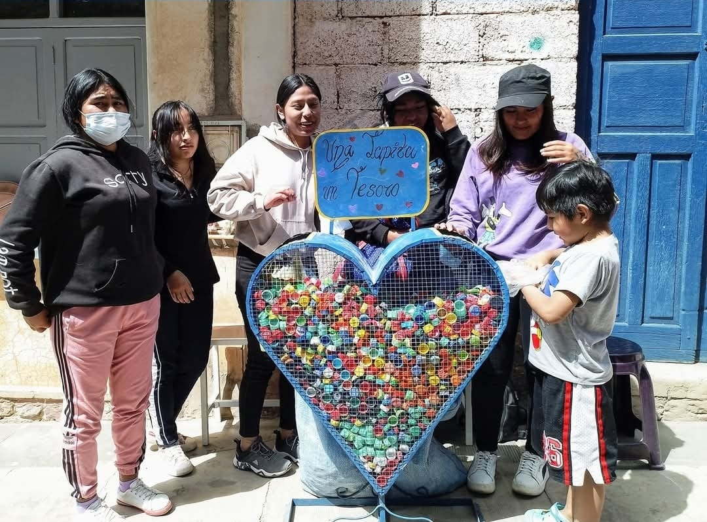
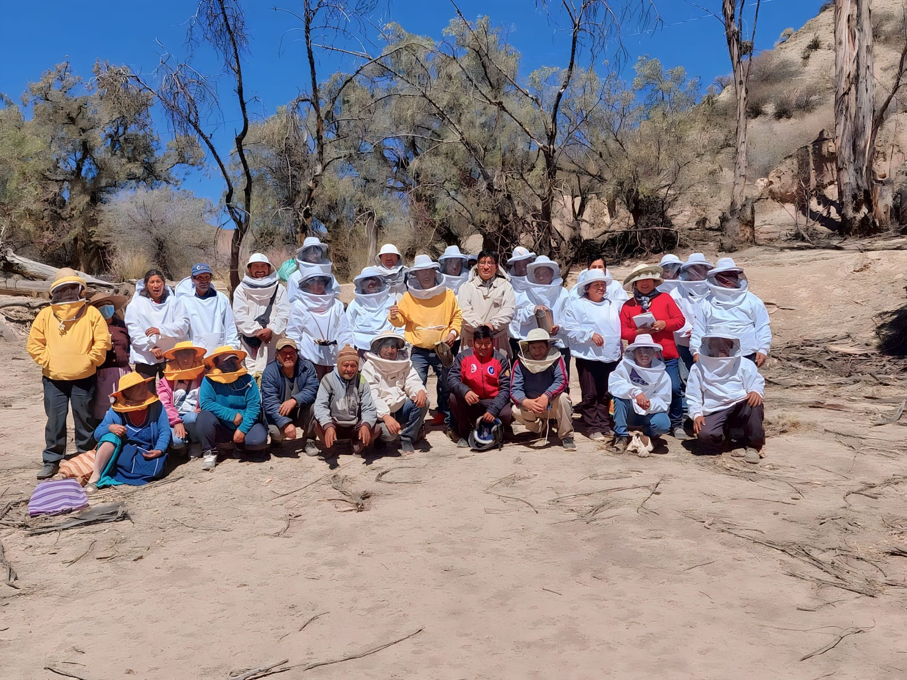
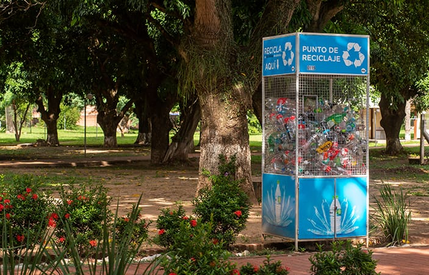
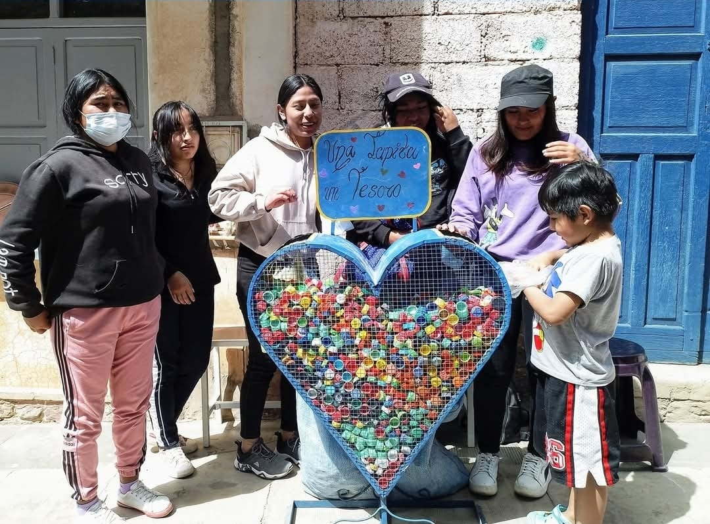
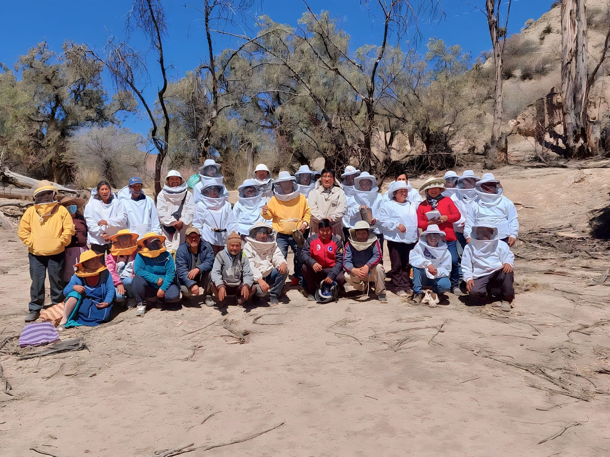
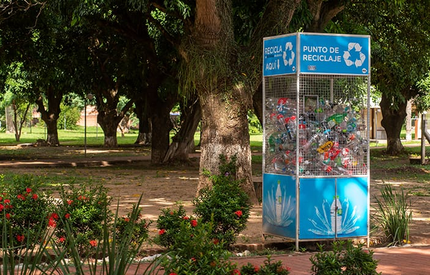

Joulebug: Comunidad verde y conectada
Guía amplia sobre cómo cuidar el medio ambiente
Desde el colegio, la familia y la comunidad podemos transformar nuestros hábitos y proteger la naturaleza.
Guía
Hábitos en el colegio 🌿
- Separar la basura y reciclar materiales.
- Ahorrar agua y energía en las aulas.
- Cuidar áreas verdes y organizar campañas ambientales.
- Usar botellas y loncheras reutilizables.
Hábitos en la familia 🏡
- Separar residuos en casa y reducir el plástico.
- Ahorrar energía y usar focos LED.
- Plantar árboles o un huerto familiar.
- Reutilizar envases y bolsas de tela.
Hábitos en la comunidad 🤝
- Unirse a jornadas de limpieza y reciclaje comunitario.
- Plantar árboles en parques y plazas.
- Realizar talleres de educación ambiental.
- Motivar con el ejemplo a vecinos y amigos.
Reutilizado ♻️
- Separar plásticos, vidrios, papel y metales.
- Reducir el consumo de productos no reciclables.
- Participar en programas de reciclaje local.
- Educar sobre el reciclado desde casa y escuela.
Galería
Reutilizado ♻️
La reutilización es darle un nuevo uso a los materiales desechados o que ya no usamos:
- Usar frascos de vidrio como floreros o recipientes.
- Convertir cajas de cartón en organizadores.
- Crear manualidades con botellas plásticas.
- Donar ropa u objetos en buen estado.

 




